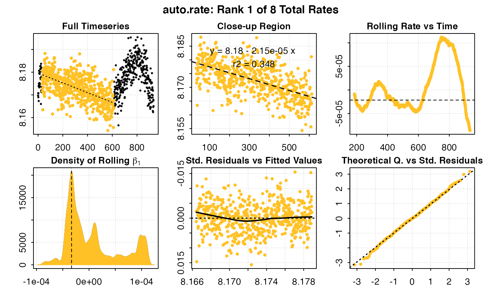

R/auto_rate.R
auto_rate.Rdauto_rate automatically performs a rolling regression on a data frame to
determine the most linear, maximum, minimum, or interval rate of change
in oxygen concentration over time. First, a rolling regression of specified
width is performed on the entire dataset to obtain all possible values. The
computations are then ranked (or, arranged), based on the "method"
argument, and the output is summarised.
auto_rate(df, width = NULL, by = "row", method = "linear", plot = TRUE)
| df | data frame, or object of class |
|---|---|
| width | numeric. Width of the rolling regression. Defaults to
|
| by | string. |
| method | string. |
| plot | logical. Defaults to TRUE. Plot the results. |
A list object of class auto_rate.
Units
There are no units of measurement involved in auto_rate(). This is a
deliberate decision. Units are called in a later function when absolute
and/or mass-specific rates of oxygen use are computed in convert_rate() and
convert_DO().
Ranking algorithms
At present, auto_rate() contains four ranking algorithms that can be called
with the argument method:
linear: Uses kernel density estimation (KDE) to detect the "most linear"
sections of the timeseries. This is achieved by using the smoothing bandwidth
of the KDE to re-sample the "peaks" in the KDE to determine linear regions in
the data.
max: regressions are arranged from highest values, to the lowest.
min: regressions are arranged from lowest values, to the highest.
interval: non-overlapping regressions are extracted from the rolled
regrssions. They are not ranked.
#> Warning: auto_rate: Multi-column dataset detected in input. Selecting first two columns by default. #> If these are not the intended data, inspect() or subset the data frame columns appropriately before running auto_rate()#> #> # plot.auto_rate # ---------------------- #> auto_rate: Plotting rate from position 1 of 8 ... #> To plot others use 'pos'#> -----------------------------------------#> #> # print.auto_rate # --------------------- #> Data is subset by 'row' using 'width' of 187. #> Rates were computed using 'linear' method. #> 8 linear regions detected in the kernel density estimate. #> To see all results use summary(). #> #> Rank 1 of 8 : #> Rate: -2.145979e-05 #> R.sq: 0.348 #> Rows: 34 to 614 #> Time: 33 to 613 #> -----------------------------------------# LONG EXAMPLES if (FALSE) { data("sardine.rd") # what is the lowest rate over a 10 minute (600s) period? auto_rate(sardine.rd, method = "min", width = 600, by = "time") # what is the highest rate over a 10 minute (600s) period? auto_rate(sardine.rd, method = "max", width = 600, by = "time") }